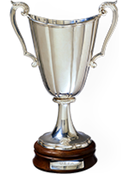
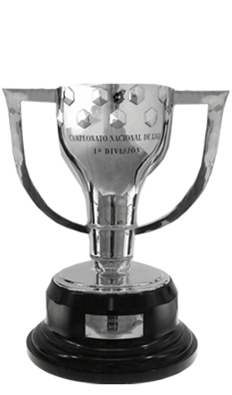
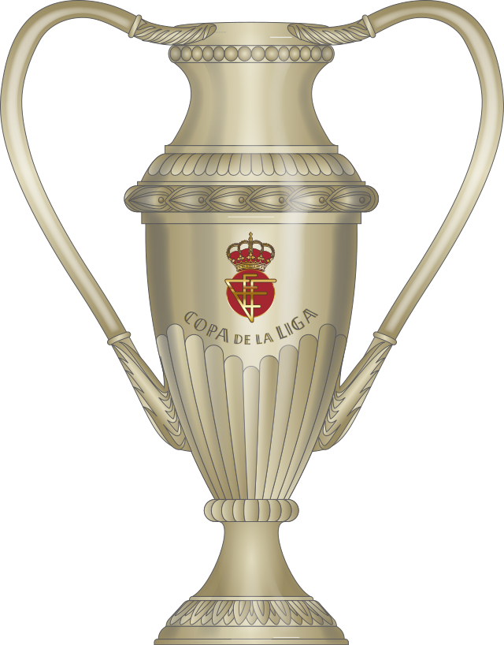
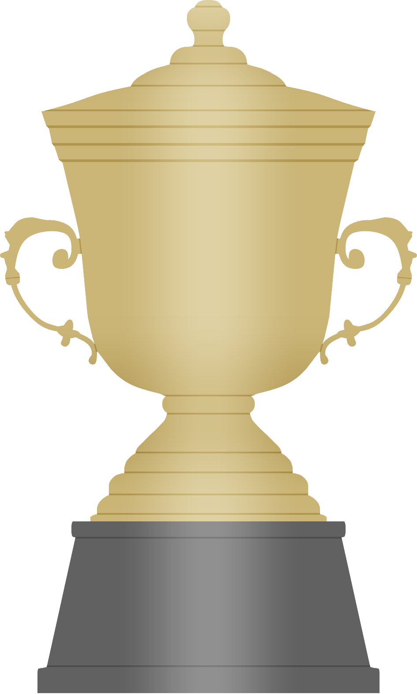

Las vitrinas del museo barcelonista acogen todos los trofeos posibles, encabezados por las Copas de Europa conseguidas en las finales de Wembley (1992 y 2011), París (2006), Roma (2009), Berlín (2015) y el Mundial de Clubes de Abu Dhabi y Japón (2009, 2011 y 2015)
1991-92, 2005-06, 2008-09, 2010-11, 2014-15

2009-10, 2011-12, 2015-16

1978-79, 1981-82, 1988-89, 1996-97
1957-58, 1959-60, 1965-66 (ganada en propiedad el año 1971)

1992-93, 1997-98, 2009-10, 2011-12, 2015-16

1948-49, 1951-52

1909-10, 1910-11, 1911-12, 1912-13
1928-29, 1944-45, 1947-48, 1948-49, 1951-52, 1952-53, 1958-59, 1959-60, 1973-74, 1984-85, 1990-91, 1991-92, 1992-93, 1993-94, 1997-98, 1998-99, 2004-05, 2005-06, 2008-09, 2009-10, 2010-11, 2012-13, 2014-15, 2015-16, 2017-18, 2018-19, 2022-23
1909-10, 1911-12, 1912-13, 1919-20, 1921-22, 1924-25, 1925-26, 1927-28, 1941-42, 1950-51, 1951-52, 1952-53, 1956-57, 1958-59, 1962-63, 1967-68, 1970-71, 1977-78, 1980-81, 1982-83, 1987-88, 1989-90, 1996-97, 1997-98, 2008-09, 2011-12, 2014-15, 2015-16, 2016-17, 2017-18, 2020-21

1983-84, 1991-92, 1992-93, 1994-95, 1996-97, 2005-06, 2006-07, 2009-10, 2010-11, 2011-12, 2013-14, 2016-17, 2018-19, 2022-23

1982-83, 1985-86
1937
1937-38
1901-1902, 1902-03, 1904-05, 1908-09, 1909-10, 1910-11, 1912-13, 1915-16, 1918-19, 1919-20, 1920-21, 1921-22, 1923-24, 1924-25, 1925-26, 1926-27, 1927-28, 1929-30, 1930-31, 1931-32, 1934-35, 1935-36, 1937-38 (incluye la Copa Macaya (1901-02) y la Copa Barcelona (1902-03)
2014-15, 2017-18
1990-91, 1992-93, 1999-00, 2003-04, 2004-05, 2006-07, 2012-13, 2013-14 (hasta 1993-94, Copa Generalitat)
1948-49, 1951-52, 1952-53
